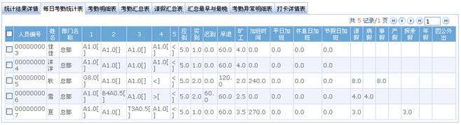
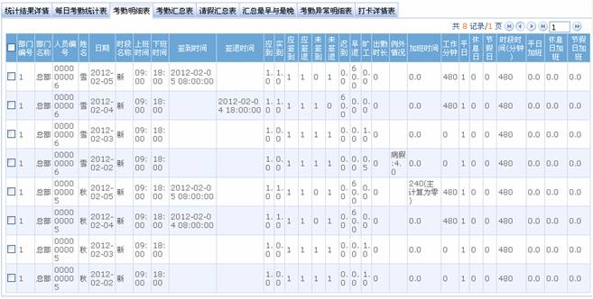
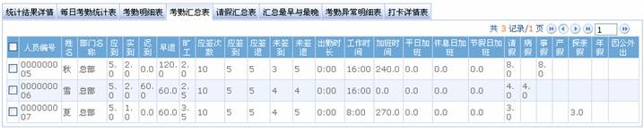
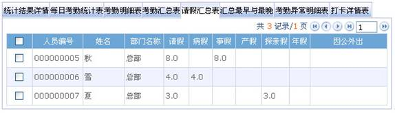
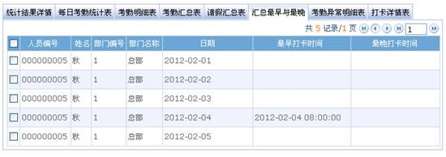
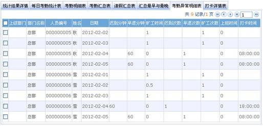
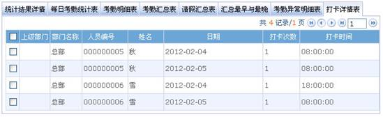

考勤报表
考勤计算
取卡规则
签到取应签到之前的最接近的原则，如9点上班，签到有8：55，9：01，则取8：55分为签到，签退取应签退之后的最接近的原则，如18：00下班，如有18：01，18：20的卡，则取18：01为签退时间；
计算流程
先判断每个人当天的班次，再判断每个人在当天的工作类型，再取卡，取请假列表。再取调休资料。取工作类型时候只取当前日期的前100天的节假日设置。取考勤参数。最后计算，保存进数据库。
计算先决条件
日期≥入职日期，并且人员的“是否考勤”设置为“是”时才计算。如果不需要考勤，那在考勤计算中就不会出现该人员的任何考勤数据。
工作类型判断规则
如果没有排班也没有临时排班，则系统认为当天是休息日。同时以弹性班次计算当天的考勤。如果时段的延时是否计加班是选中的，则会依据考勤参数里的设置进行计算加班，再依据取整规则进行取整。如果时段的工作时间设置为零，则认为该段是属于加班时间段，计算的时候将会直接计算成平时加班。
取整规则
分为向下取整、四舍五入和向上取整：
向下取整时，被计算的项目的值在求余后超出最小单位时，其多余的部分将被舍弃；
四舍五入时，被计算的项目的值在求余之后超出最小单位的一半时候，将会进位一个最小单位，如果小于最小单位的一半时，将会直接舍弃；
向上取整时，如果计算的项目的值在求余之后超出最小单位，将会进位一个最小单位。
排班取班原则
1、存在正常排班的时候，系统认为该天是工作日，但如果再另外追加临时排班时，追加的临时排班时段系统认为是加班时段。
2、如果没有排班也没有临时排班时，系统认为该天为休息日，如果有员工来上班将会以弹性班次计算，并且计算为休息日加班，如果是节假日，那就计算为节假日加班（这点会导致出现的问题是，如果新进的员工未给其排班时候，容易导致计算出该员工的考勤全为休息日加班）
3、如果没有排班但是有临时排班，系统会判断该天是否存在调休的记录，如果存在调休的记录，那就以调休的类型为准，否则以正常上班计算。
4、找班的顺序是先找排班：
（1）、如果有排班则以排班计算，同时查找有无临时排班，如果有则以临时排班时是选择的“仅以临时排班生效”还是“追加于员工排班之后”进行计算，临时排班的工作类型可在临时排班时指定。
（2）、如果没有排班，则去找有无临时排班，有临时排班的话判断是否有调休记录，有调休以调休的类型判断工作类型，否则仍以正常上班计算；
（3）、如果没有排班，也不存在临时排班，则以弹性班次计算，这时会判断是否存在调休记录，如果存在则以调休的类型计算，如果不存在则以休息加班计算。
5、如果存在节假日的设置，则该天为节假日，如果节假日有存在打卡记录则以节假日加班计算。 如果该天还存在排班的记录，则以班次的设置计算节假日加班。如果不存在排班的记录，则以弹性班次计算节假日加班。如果在节假日当天存在该员工的调休记录则以调休的类型计算当天的考勤。
考勤报表
考勤报表是将所查询人员在指定时期内的每日考勤状况在表中列出，并统计旷工、迟到/早退、加班、请假的时间，便于对应核查是否与实际情况有出入。如果查看结果不符，可以根据需要调整班次，添加补签卡、请假单或调休单，以及直接修改日报数据。
点击【考勤】-【考勤报表】，选择人员，选择开始、结束日期，点击【统计】，则显示各种考勤报表。如果没有选择任何人，将默认对全部人员进行计算。计算完之后在下面的【统计结果详情】列表显示，如果用户需要显示具体各方面信息，可以直接点选表单切换到相应的数据区域。左边的操作区可以进行诸如补签卡、补请假、临时排班、新增排班等操作。
注意：统计只能当月日期，或者天数不能超过开始日期的月份天数。
各表中标识含义如下所示：
病假:分钟( B ) 事假:分钟( G ) 产假:分钟( C ) 探亲假:天( T ) 年假:天( S ) 应到/实到:天( ) 迟到:分钟( > ) 早退:分钟( < ) 请假:小时( V ) 旷工:天( A ) 加班:小时( + ) 未签到:( [ ) 未签退:( ] ) 自由加班:小时( F )。标识的增加与修改请参见考勤参数。
统计结果详情

此表统计的是有效的考勤记录，有效考勤记录决定于“有效考勤记录时间间隔应大于N分钟”的设置。
考勤状态为原始记录状态，更正状态是根据人员的排班时段和打卡时间，按照考勤计算规则判断人员是上班签到还是下班签退，统计时将以此状态进行统计。
每日考勤统计表

该表显示在选定期间内，人员每日考勤状态、考勤统计、加班统计、请假及请假汇总等，并以符号或数字或符号加数字的形式显示在列表中。
考勤明细表

该表按日期显示所有人员的排班情况、出勤情况、加班、节假日统计等。考勤明细表是人员在每个考勤时段的考勤记录统计表。
应签到/应签退、无签到/无签退：1表示“是”，0表示“否”；
出勤时长：人员签到时间与签退时间的时间间隔；
例外情况：指的是人员除上下班之外的异常情况，如人员请假等事项；
工作分钟：时段的“工作时间(分钟)”中，实际已出勤的有效时长。
注意：此表的旷工、出勤时长、工作分钟、时段时间的数据都是以分钟为单位显示，不以按照统计项目中变更的单位设置变化。
考勤汇总表

列表显示每个人员在此期间内的考勤情况汇总，包括出勤、请假、加班等的明细表。即考勤明细表的汇总表。
请假记录按所属的假类归类计算。报表中“请假”列的数据=各个假类数据的总和，例如：请假=病假+事假+产假+探亲假+年假+自定义假类。
请假汇总表

报表汇总选择日期范围内，所有有效请假记录的有效时间、请假类型。有效时间（分钟）即该请假记录开始时间与结束时间的间隔分钟数。
汇总最早与最晚
统计考勤结果中每个人每天打卡数据中最早与最晚的打卡数据。

考勤异常明细表
列表显示所有考勤异常明细情况。

打卡详情表
列表显示所选人员的打卡详细情况。
